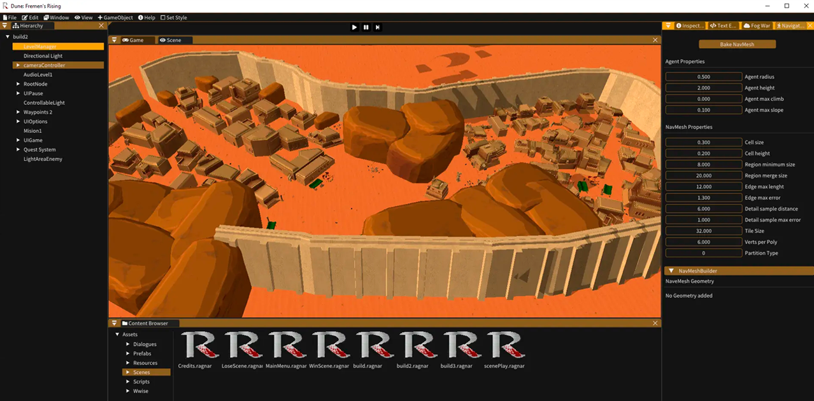

Dune Fremen's Rising
 Web pageOverview
RTT video game based on the Dune IP in our own engine. This tactical action game tells the brief story of how Paul Atreides experiences a Harkonen siege at the gates of his new home, where he has been taken in by the Fremen.
Genre: Real Time Tactics
Platform: Windows PC
Engine: Ragnar Engine (Own engine)
Tools Used: Ragnar, Google Docs, Hack n plan, Blender
Team Size: 30
Role: Concept, Level Design, Prop Modeling